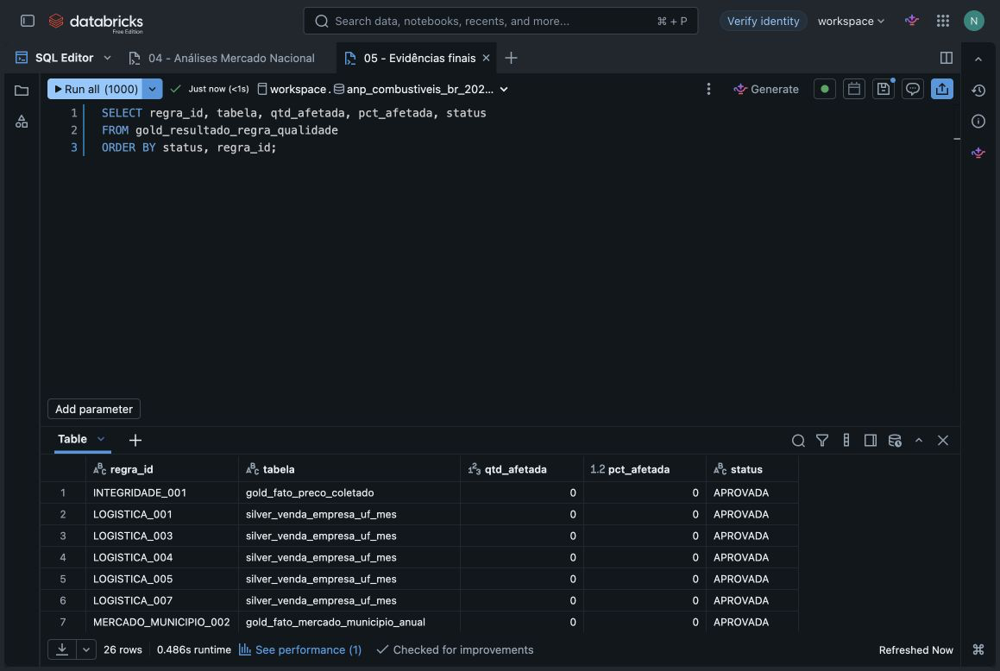
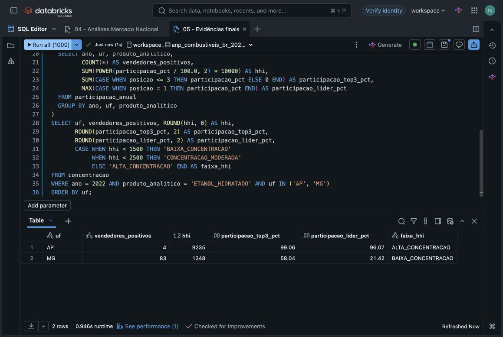
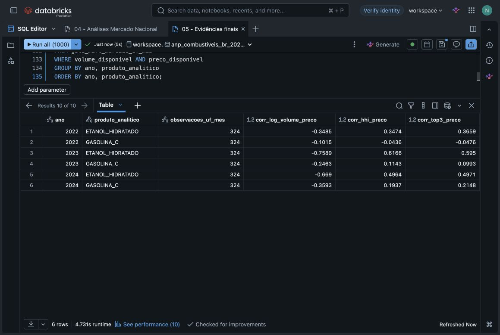
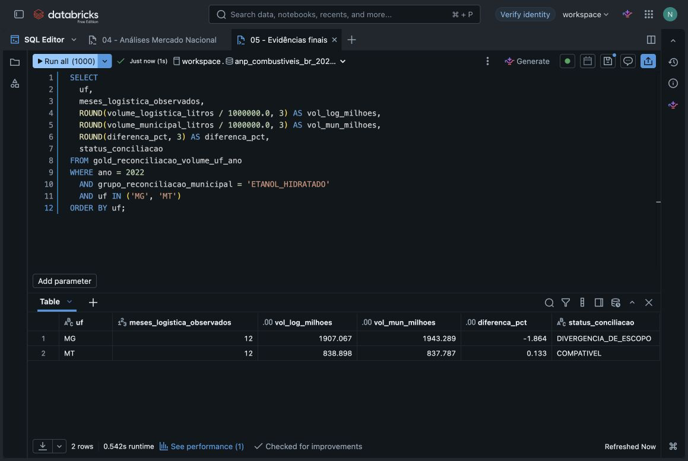

Vendedores
Quem declara mais volume por UF, produto e mês?
MVP · Engenharia de Dados
Volume comercializado, concentração e preços de revenda por UF · 2022–2024
Fabiola Dias Carvalho
Ponto de partida
Quis entender como o volume declarado por vendedor se distribui entre as UFs, quão concentrado é esse mercado e como esse contexto conversa com preços pesquisados e escala municipal de vendas.
“Como evoluiu o volume de gasolina C e etanol hidratado declarado por vendedor nas UFs, qual é a estrutura de concentração observada e como ela se relaciona, de forma descritiva, com preços de revenda e escala municipal?”
Perguntas de análise
Quem declara mais volume por UF, produto e mês?
Qual é a participação do líder, dos três maiores e o HHI em cada mercado estadual?
Como se comportam Vibra, Ipiranga, Raízen e Ale nos estados onde aparecem?
Como variam mediana, dispersão e cobertura da pesquisa de preços por UF?
Que padrões descritivos aparecem entre preço, concentração e escala do volume?
O volume da logística é compatível com a soma municipal anual?
O que o cadastro de bandeiras acrescenta sem reescrever o histórico?
Fontes oficiais
| Base ANP | Granularidade | Uso no projeto |
|---|---|---|
| Logística 02 | vendedor × UF × produto × mês | volume líquido, participação, ranking e concentração |
| Preços semanais | posto × produto × data | mediana, dispersão e cobertura do preço de revenda |
| Vendas municipais | município × produto × ano | escala municipal e reconciliação anual |
| Cadastro de revendedores | revenda × data de extração | fotografia atual da rede e das bandeiras |
Arquitetura
Coleta
URLs, data de acesso, tamanho e hash são gravados no manifesto local.
Bronze
Arquivo, fonte, data de ingestão e lote acompanham cada linha. Cargas são acumuladas por lote.
Silver
Datas, decimais, UFs, produtos, CNPJ, vendedor e flags de qualidade são padronizados.
Gold
Dimensões, fatos, participação, HHI, preço por UF, reconciliação e catálogo são publicados.
Modelagem
Métricas
Soma do volume declarado por vendedor. Ajustes negativos continuam visíveis no fato de origem.
Ranking usa saldo positivo do vendedor sobre o total positivo da mesma UF, mês e produto.
HHI, participação da líder e Top 3 são calculados por UF, mês e produto; o resumo anual recalcula o indicador sobre o ano inteiro.
Qualidade e catálogo

Análise principal


Reconciliação
Foram produzidas 162 comparações UF × ano × produto. A tabela mostra os dois volumes, a diferença percentual e o número de meses observados.
Em 76 comparações há divergência de escopo. Em 2022, por exemplo, o etanol de Mato Grosso ficou compatível (0,133%), enquanto Minas Gerais mostrou diferença de -1,864%. A divergência é exposta, não compensada artificialmente.

Limites
Entrega